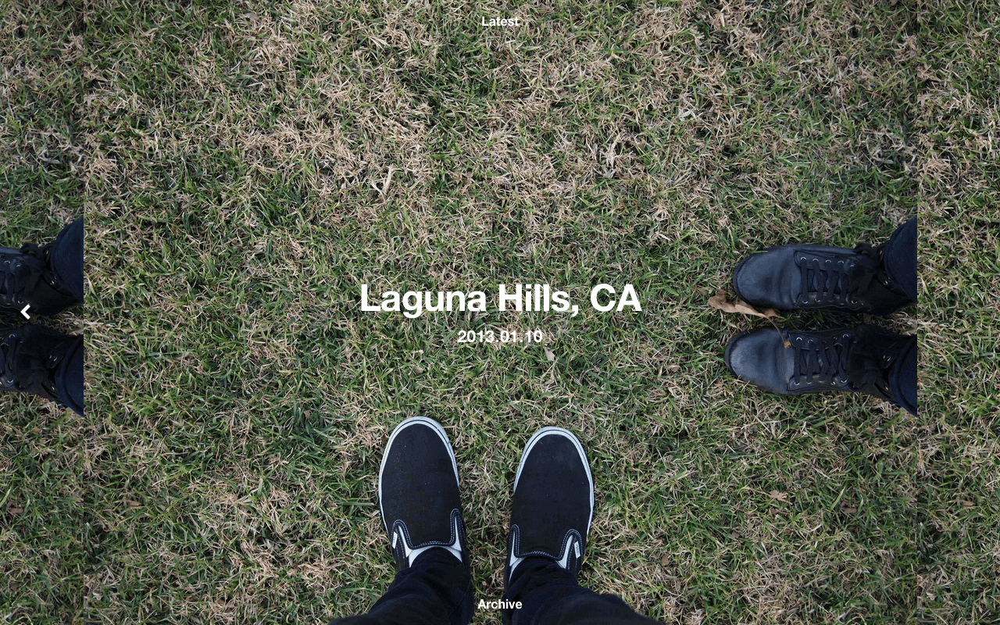
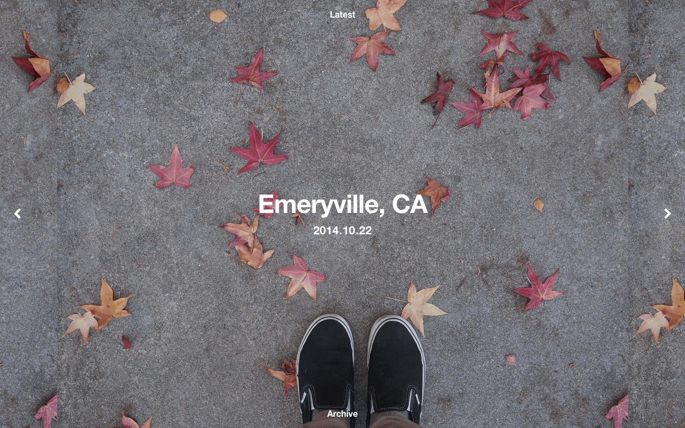
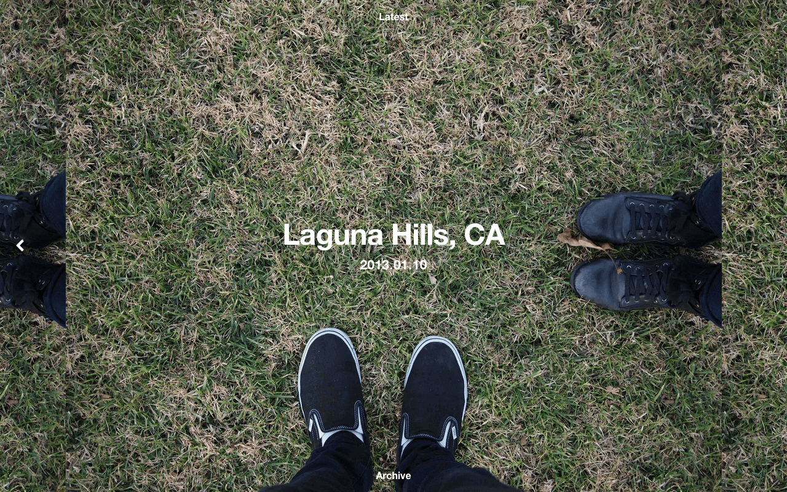
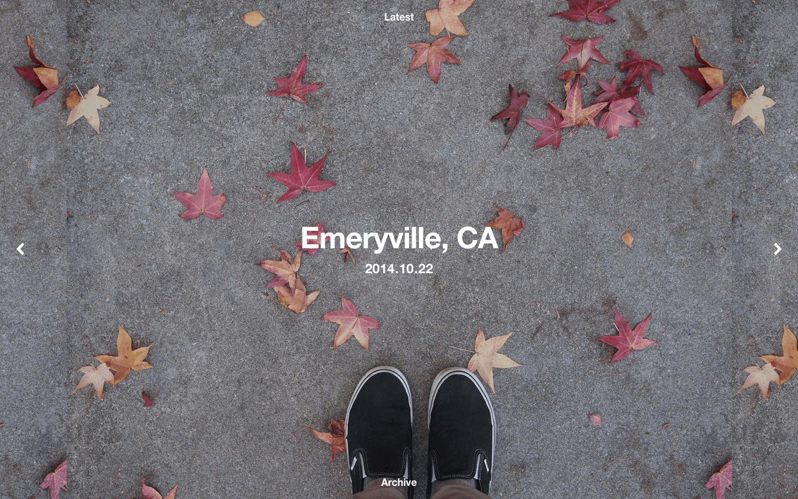

Places
Places is a foot selfie blog, built using Hexo. Each photo is a snapshot of a distinct moment in my life—where I am, who I’m with, what the weather was like, and even how I was feeling at the time.
View Places.


Places is a foot selfie blog, built using Hexo. Each photo is a snapshot of a distinct moment in my life—where I am, who I’m with, what the weather was like, and even how I was feeling at the time.

